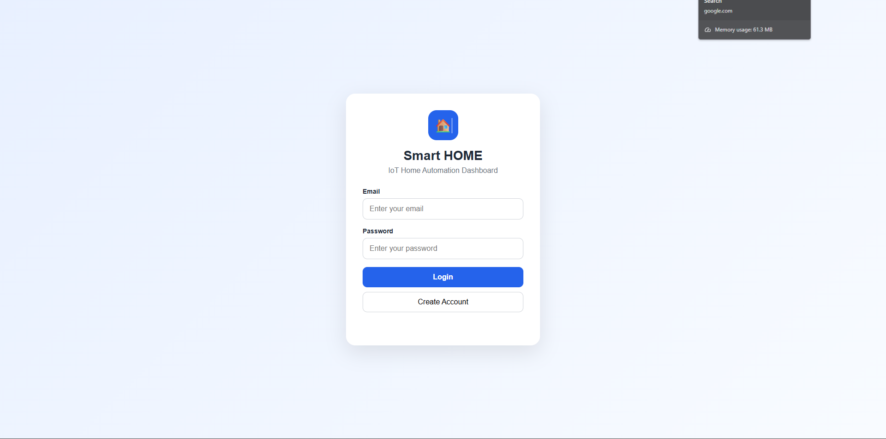
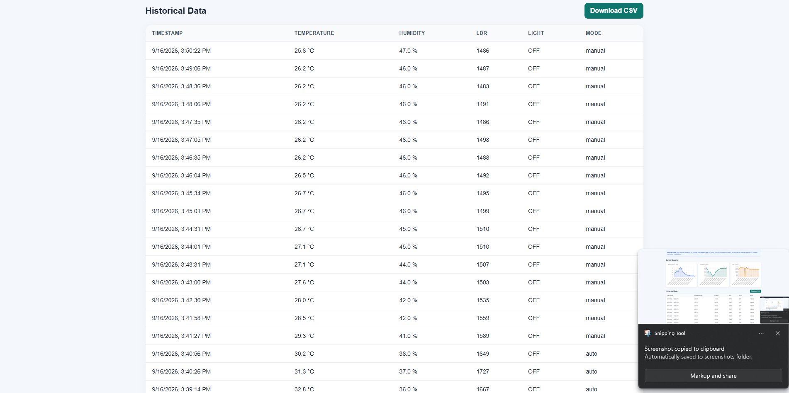
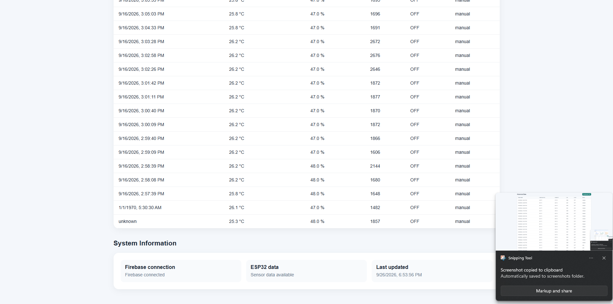

Platform
Firebase Web App
Authentication, real-time data access, and cloud synchronization
PROJECT 04 / INTERNET OF THINGS
This project focuses on the software and cloud side of the IoT system: a web dashboard connected to Firebase Authentication and Realtime Database for live environmental monitoring, manual and automatic appliance control, historical data review, and CSV export. The dashboard communicates with the ESP32 hardware through Firebase rather than directly through local device access.
Platform
Authentication, real-time data access, and cloud synchronization
Data Layer
Temperature, humidity, light-level telemetry, and control states
Core Features
Manual mode, automatic mode, graphs, history, and CSV export
01 / Overview
The Firebase IoT Web Dashboard is the software layer of the complete smart-home system. It provides a secure login, reads live sensor values from Firebase, displays historical charts, and allows users to control the relay-driven appliance through both manual and automatic modes. The dashboard is a cloud-connected monitoring interface for a wider ESP32-based hardware system.
02 / Objective
Developing a Firebase-based IoT web dashboard for authenticated real-time monitoring, appliance control, automatic operation, historical data visualization, and data management.
The web application is designed around a software-to-cloud architecture where the user interacts with a browser dashboard, Firebase handles secure authentication and real-time data flow, and the ESP32-based hardware receives updates and transmits readings through the same Firebase data paths.
03 / Problem Statement
A smart-home system needs more than sensor readings; it needs a clear, secure, and efficient interface for users to monitor conditions, view history, and control the environment. This dashboard addresses that need by centralizing monitoring and control in one web application backed by Firebase Authentication and a Realtime Database. It allows users to interpret data and operate the connected appliance consistently without interacting directly with the hardware.
04 / System Architecture

05 / Authentication
The application uses Firebase Authentication to restrict access to the dashboard, ensuring that only authorized users can view and interact with the IoT monitoring system. The login page represents the secure entry point for the software layer of the complete system.

06 / Web Dashboard
The dashboard provides a clean central interface for real-time IoT monitoring and appliance control. It displays live temperature, humidity, and light-level values, lets users switch between manual and automatic operation, and offers direct access to historical analytics and export features.




07 / Real-Time Monitoring
Temperature
Live temperature values displayed on the dashboard.
Humidity
Humidity readings updated in real time through Firebase.
Light level
Ambient light information is tracked for automatic control logic.
08 / Manual Control
Manual control gives the user direct command over the appliance without needing to physically interact with the hardware, while still preserving the live Firebase-backed state model.
09 / Automatic Control
This mode reduces the need for constant user intervention while still preserving a retrievable control history across the cloud layer.
10 / Firebase Realtime Database
controls
├── bulbState
├── mode
└── threshold
telemetry
└── live
├── temperature
├── humidity
├── lux
├── bulbState
└── timestamp
history
└── sensor records11 / Historical Data
The dashboard stores historical readings and presents them in a structured way for review. This allows users to analyze trends, identify patterns in lighting and environmental conditions, and evaluate using previous data rather than relying only on the current state.
12 / Data Visualization
The graph-based visualization presents sensor history in an easy-to-understand format, making the live and past states interpretable at a glance.
Users can revisit the historical data page to review previously logged values, compare system behavior over time, and understand the operating conditions behind automatic responses.
13 / CSV Export
The dashboard includes a CSV export capability so collected readings can be exported for further analysis and documentation. This makes the project useful for both everyday monitoring and data-driven evaluation of the smart-home environment.
14 / Screenshots


15 / Video
The supplied Project 4 asset set includes a demonstration video for the overall project workflow. It is referenced here as the application demonstration video for the combined smart-home system and is appropriately placed within the dashboard-focused project because it supports the end-to-end functionality of the web-based monitoring and control interface.
16 / Technologies Used
17 / Results
18 / Learning Outcomes
19 / Connection
Project 4 is the software and cloud layer: the Firebase IoT Web Dashboard. Project 5 is the embedded and hardware layer: the ESP32 Smart Home Automation system. Firebase acts as the communication layer between them, allowing the dashboard to monitor live data and issue control commands while the ESP32 hardware senses, acts, and reports sensor state back to the same database.
These are separate projects, but together they form the complete IoT system: Project 4 manages the web dashboard and cloud layer, while Project 5 performs the physical sensing and appliance control.